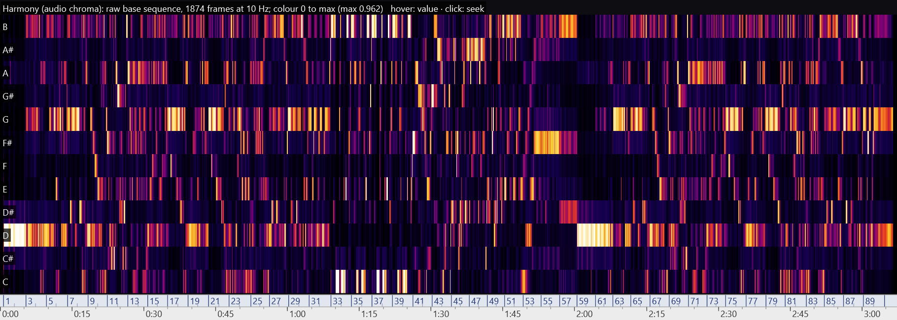
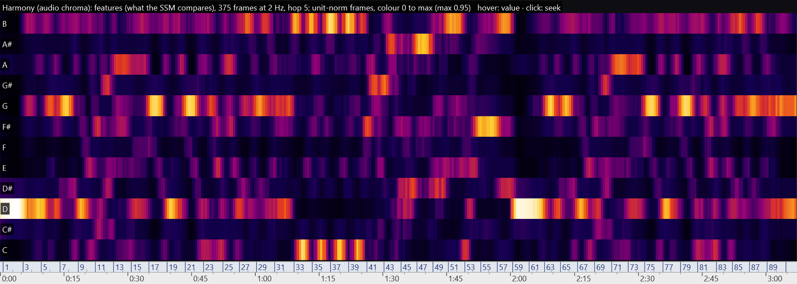
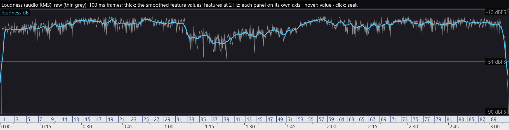
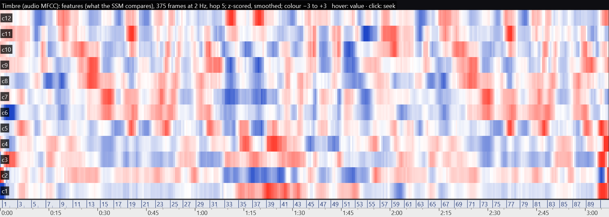
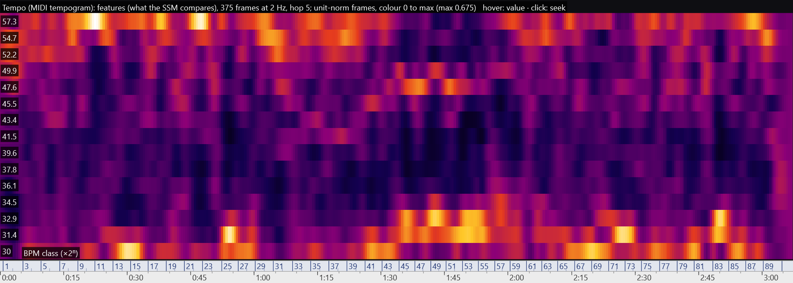

Raw aspect
The question: what exactly are the structure views comparing?
The matrix, the scape plot and the novelty view never see the music. They see a list of numbers, one set every half second. R shows those numbers for the aspect in the Aspect box. Look here first when another view surprises you.
| Aspect | Made from | What it holds |
|---|---|---|
| Harmony (audio) | the sound | twelve pitch classes |
| Harmony (MIDI) | the notes | twelve pitch classes, weighted by velocity and fading after each onset |
| Texture | the notes | register centre and spread, notes held, onsets per second, pedal share |
| Dynamics | the notes | mean velocity of the onsets |
| Loudness | the sound | level in dB |
| Timbre | the sound | twelve MFCC numbers describing the colour of the sound |
| Tempo (MIDI, audio) | the onsets | how strongly the music pulses at each tempo |
The Show box has two settings. Raw is the sequence at ten values per second. Features is what the other views really use: averaged over 2.1 seconds, two values per second, and normalised. A detail that is there in raw and gone in features cannot influence any structure view.
Harmony


Texture
 1234567
1234567- Thin grey line: the raw values, ten per second. Nervous, because every note counts.
- Thick coloured line: the smoothed values the structure views use. Read this one.
- Thin horizontal lines: axis marks; their values are at the right (here C6, C5, C4, C3).
- Register spread collapses at 1:08 and stays narrow: the hands come together in the middle part.
- Many notes held at 1:50.
- A burst of onsets: the cadenza before the reprise.
- No pedal at all from 1:15 to 1:24.
Dynamics and loudness
 123
123- Grey dots and short lines: single moments with onsets. A dot is a moment with no onsets just before or after it; gaps mean nothing was struck.
- Blue line: the smoothed mean velocity. It falls from about 90 to 60 at 1:09 and returns at 1:50.
- Horizontal lines: velocity 32, 64, 96.

Timbre

The twelve rows have no simple musical names; roughly, the lowest rows follow the overall brightness of the sound. Read this picture for blocks: a stretch of columns with one pattern, then another (c2 turns blue through most of the middle part). With a single piano preset, timbre should mostly echo register, loudness and pedal.
Tempo: how to read a tempogram
 1234567
1234567- White horizontal lines: 30, 60, 120, 240, 480 BPM. Each is double the one below.
- A bright horizontal band: the onsets pulse steadily at that tempo. Here about 240 per minute through the first section, and again after 2:05.
- Dashed lime line: the strongest tempo anywhere from 30 to 480.
- Solid cyan line: the tempo estimate, which only looks between 50 and 200.
- Why cyan jumps here: the true band is above 200, where the estimate may not look, so it grabs whatever is next.
- A bright spot: the cadenza, very regular for a few seconds.
- Both lines agree: a moment when the reading is safe.
- A pulse always shows at several tempos: its double, its half, its triple. The band at 240 may be the eighth notes of a beat at 120. The picture cannot say which one you would tap.
- A wavy or broken band is rubato. No band at all means no steady pulse.
- Dashed and solid together: trust the tempo. Apart: look at the picture, not at the lines.
- Only the picture in features enters the structure views: there, doublings are folded into one row ("BPM class"), so half and double time count as the same.

| Looks like | What it is | How to read and use it |
|---|---|---|
| Thin grey line | Raw values, ten per second. | |
| Thick coloured line | The smoothed values the other views use. The colour only tells the panels apart. | |
| Grey dots | Isolated raw values (dynamics). | |
| Thin horizontal lines | Axis marks, with their values at the right or left edge. | |
| Solid cyan line | Tempo estimate, 50 to 200 BPM, smoothed over 3 seconds. It makes octave errors. | |
| Dashed lime line | Strongest tempo, 30 to 480 BPM. Display only. | |
| Blue, white, red | Timbre: below, at, and above that row's average, from -3 to +3 standard deviations. | |
| Pale vertical line | Where the mouse is; the box gives the values. |
Read more
- FMP C6S2: Fourier tempogram
- FMP C6S2: cyclic tempogram and Grosche, Müller and Kurth, Cyclic tempogram, ICASSP 2010
- FMP C6S1: onset strength from spectral flux
- FMP C1S3: timbre
- Davis and Mermelstein, 1980 (where MFCCs come from) and B. Logan, Mel frequency cepstral coefficients for music modeling, ISMIR 2000 (PDF)
- FMP C4S2: feature smoothing